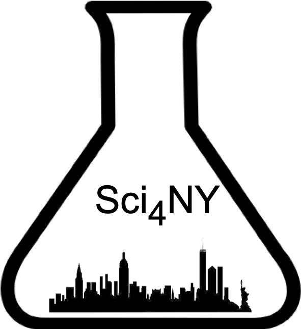

Sci4NY
Science for New York (Sci4NY) is an initiative that offers support to local policymakers to address technical needs they may face by connecting them with assistance from members of NYC’s vast STEM community. More broadly, the program aims to build a stronger network between NYC’s political and scientific communities, enhancing science policy-based decision-making to benefit the City’s people and its communities.